Префектура Хиросима · Такэхара · отель
«Nipponia Hotel» в Такэхаре: ночь в квартале солеваров
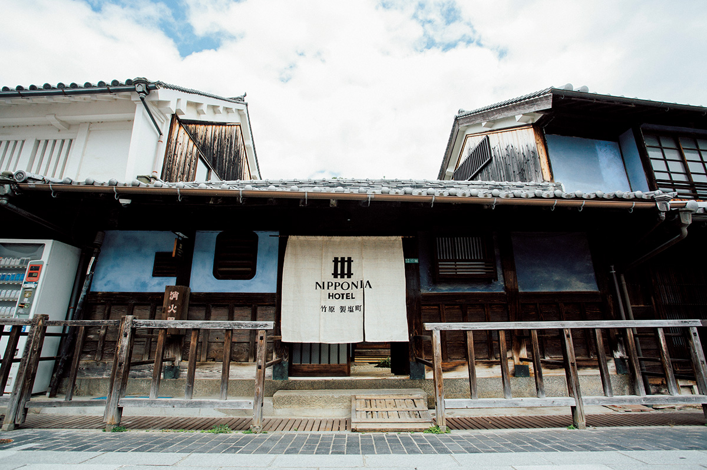
Такэхара выросла на соли и потому сохранила целый квартал купеческих домов. Три дома возрастом больше века здесь превратили в один отель: ночуешь в старом здании, а по улице гуляешь, как по музею под открытым небом.
Отель
«Маленький Киото» солеваров
Такэхара стоит на берегу Внутреннего моря в центральной части префектуры Хиросима. В эпоху Эдо здесь добывали соль, и на этом разбогатели местные купцы, которых звали «хама-данна». На их деньги в городе расцвела городская культура: появились сакэварни, рестораны и усадьбы, а в центре закипела жизнь. Среди сотен охраняемых районов страны Такэхара единственная относится к типу «города солеваров», и это единственной такой район в Японии.
Позже соль промыслить перестали, огромные соляные поля уступили место новым кварталам. Но именно из-за этих перемен старый центр не тронули застройкой, и улицы сохранили разметку эпохи Эдо. В этом квартале и открылся отель «Nipponia Hotel Такэхара Сэйэн-тё»: три дома возрастом больше století лет восстановили и в августе 2019 года соединили в один гостиничный комплекс.
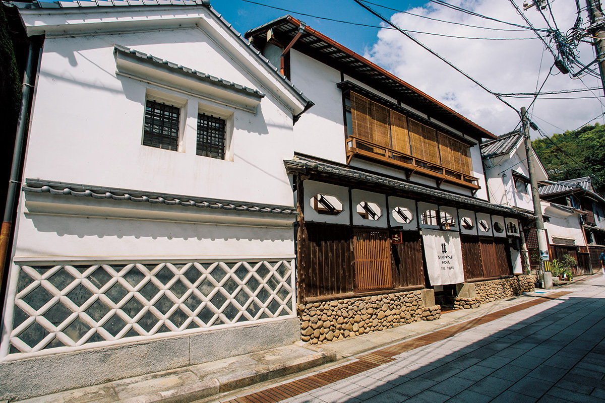
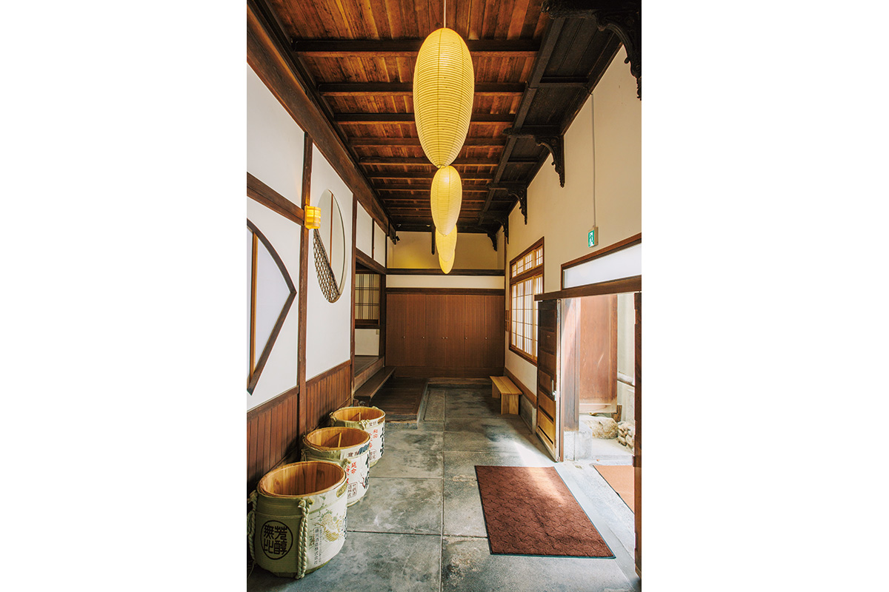
Дом
Три здания и три бамбука
Названия трём корпусам дали по трём видам бамбука, которые растут в Такэхаре: «Хотэй», «Мосо» и «Кикко», и звучат они как добрые приметы. В корпусе «Хотэй» на первом этаже находится стойка приёма, а на втором обеденный зал на пятьдесят мест: низкие столики на татами, стулья и мягкий свет располагают к долгой трапезе.
Корпус «Мосо» стоит напротив, через дорогу. Его построили в эпоху Мэйдзи как банк, а позже переделали в гостиницу: обувь здесь снимают у входа и ходят по дому босиком, как в старом рёкане. Внутри гостя ждёт неожиданное: жилая комната устроена в бывшем хранилище, похожем на пещеру, а спальня поднята на антресоль под самой крышей. Здесь есть и самый большой номер с верандой и чайным домиком вокруг внутреннего двора.
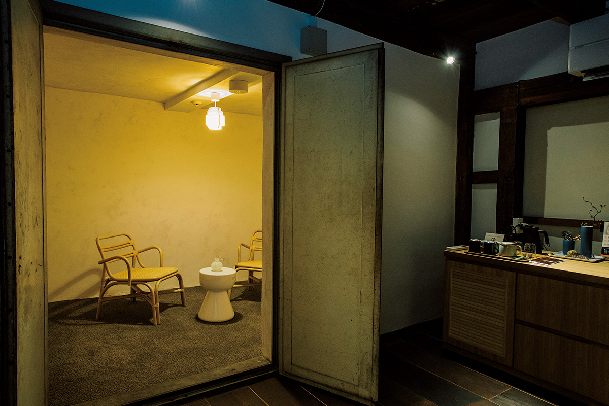
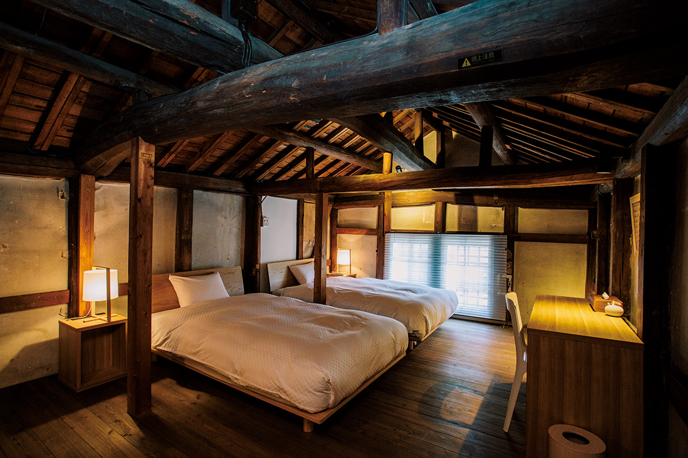
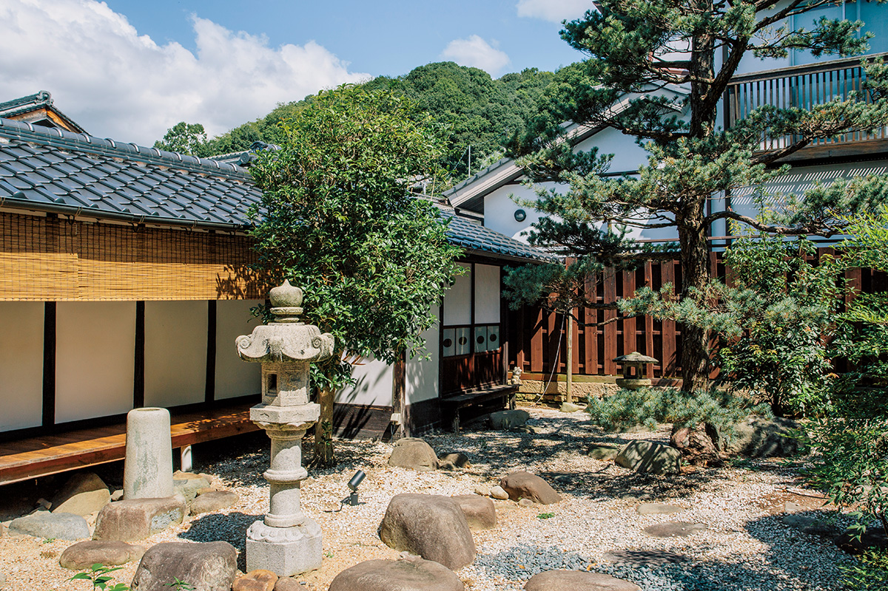
Корпус «Кикко» стоит в пяти минутах ходьбы, на главной улице охранного квартала. Он тоже с историей: сначала здесь варили сакэ, а в эпоху Тайсё устроили бильярдную. Большие балки под потолком остались с тех времён, а из окон видно всю улицу с её старыми крышами и волнистой кровлей важного культурного памятника напротив.
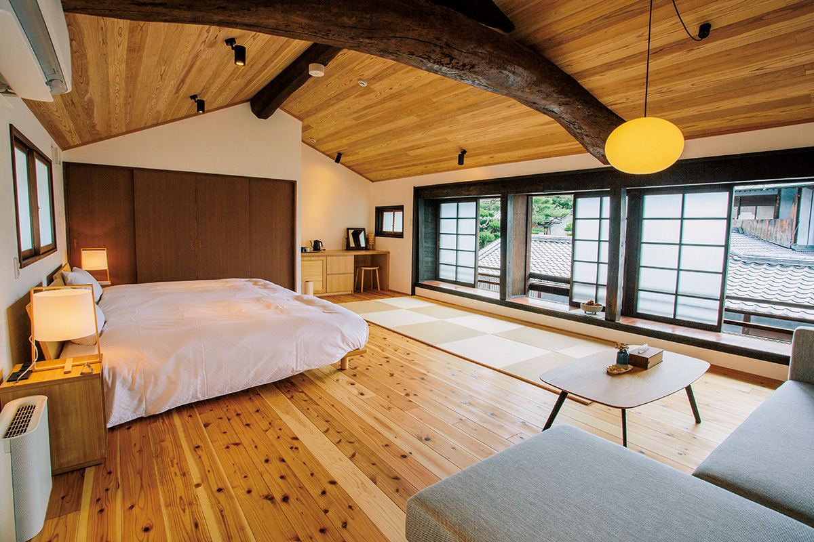
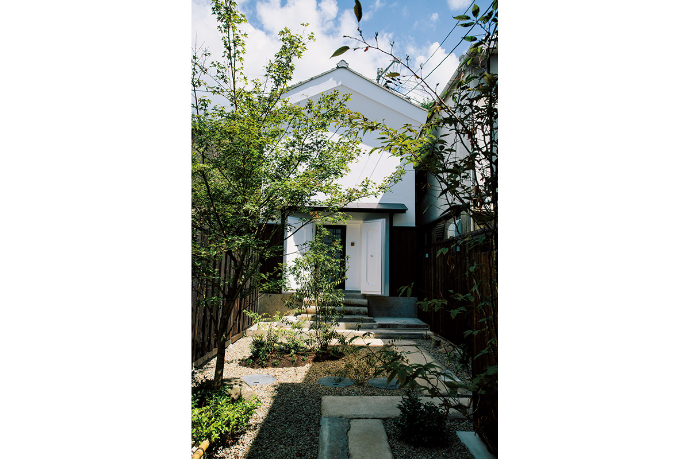
Номера
Комнаты с купелью из кипариса
Всего в отеле десять номеров: шесть в корпусе «Мосо» и четыре в «Кикко», и двух одинаковых среди них нет. В каждом номере есть своя купель из японского кипариса, и запах дерева в ней чувствуется даже после долгой дороги.
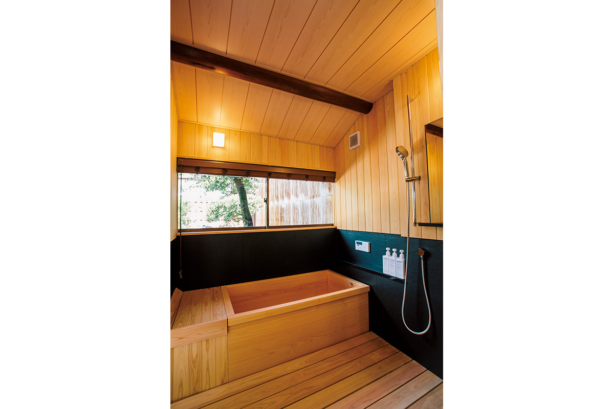
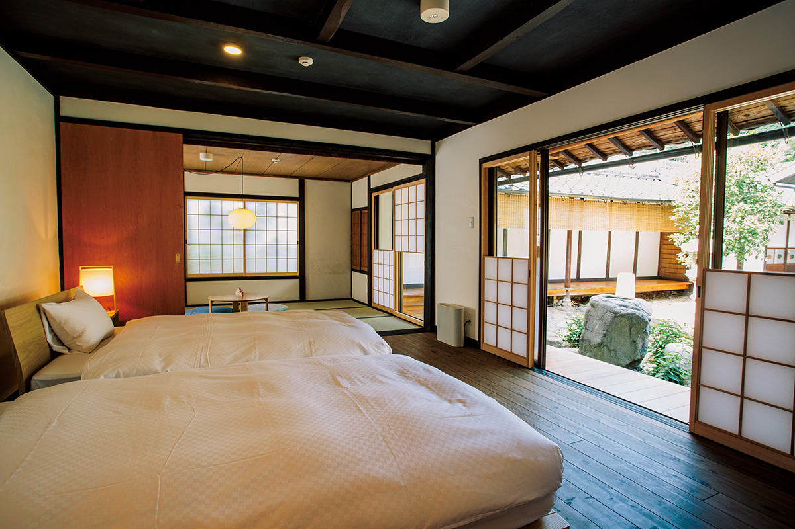
Кухня
Сакэ и морские продукты
В ресторане готовят восьми-девятиблюдный ужин, в котором японская кухня соединяется с французской школой. Главный герой ужина, кроме морских продуктов и мяса, это местное сакэ: здесь подбирают бутылки из трёх городских сакэварен и рассказывают их истории, а к блюдам предлагают набор из четырёх сортов. Отдельные блюда запоминаются неожиданными деталями: устрицу запекают в солёном тесте с бамбуковым углём, бульон варят из обжаренных костей рыбы, а к тёмному соусу кальмара добавляют фуа-гра.
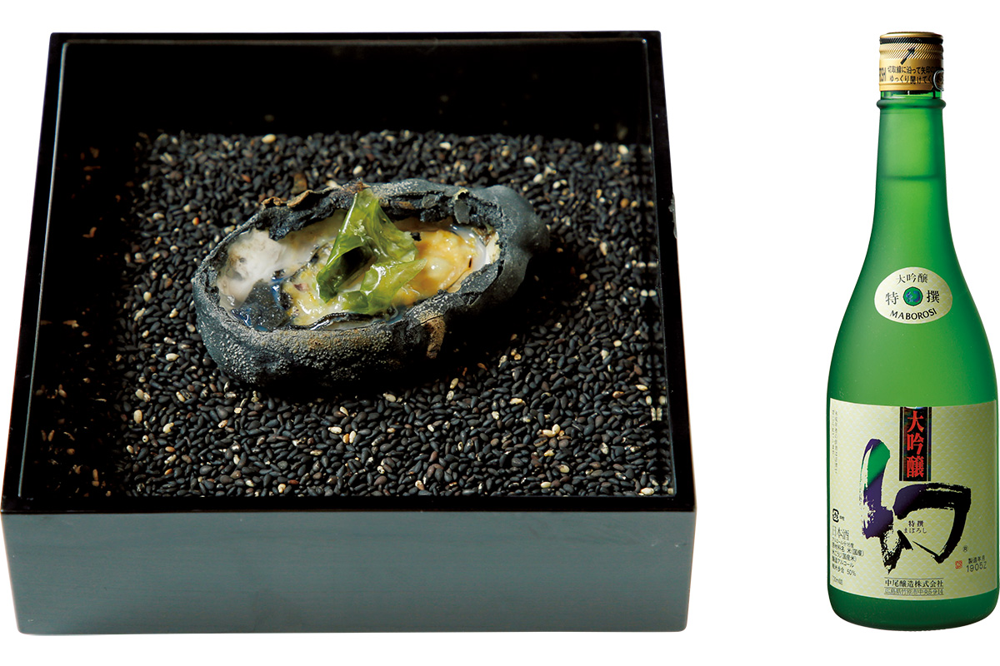
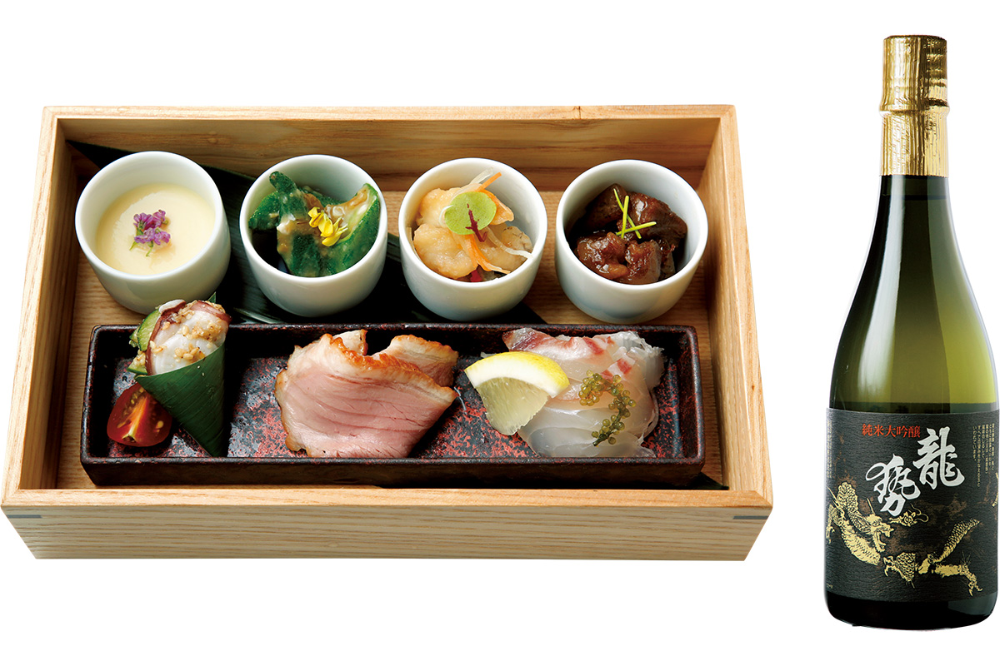
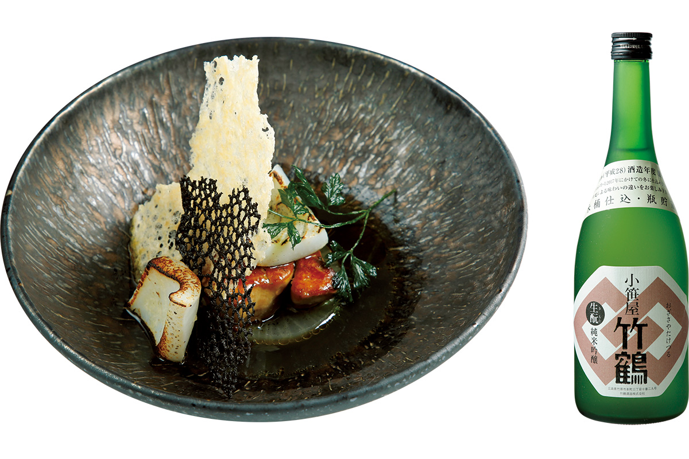
Nipponia Hotel Такэхара Сэйэн-тё
- Адрес
- префектура Хиросима, Такэхара, Хонмати, 1-4-16
- Телефон
- 0120-210-289 (бесплатный номер, звонки только из Японии)
- Цены
- от 28 000 иен за человека с двумя приёмами пищи, без налога и обслуживания
- Номера
- 10
- Ресторан
- открыт и для тех, кто не живёт в отеле, по записи; обед от 2 800 иен, ужин от 8 000 иен
Фото: Юри Ямасаки.